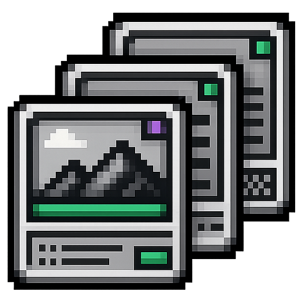

Technical Systems for Small Businesses
I build practical websites, automations, AI tools, and operational systems that save time, connect disconnected tools, and make your business easier to run — without the cost of hiring a full technical team.
Clear scope. Direct communication. A working solution you understand.
Sound Familiar?
Data entry, research, reporting, and follow-up consume hours that should go toward customers and growth.
Important information lives across spreadsheets, inboxes, and platforms that were never designed to work together.
Leads, listings, and operational issues appear faster than your team can consistently review and prioritize them.
Visitors arrive, but the site does not build enough trust or guide them toward taking action.
Ways I Can Help
Clear, credible websites that explain what you do, build trust, and make the next step obvious.
Common projects: Business websites, landing pages, website redesigns, hosting, analytics, and SEO setup.
Workflows that move information, trigger follow-up, and handle repetitive steps without constant manual attention.
Common projects: Workflow automation, web scraping, data collection, API integrations, alerts, and scheduled processes.
Focused AI systems that qualify leads, summarize information, score opportunities, and support repeatable business decisions.
Common projects: AI assistants, lead qualification, document processing, scoring, monitoring, and visual-analysis tools.
Dashboards, documentation, and process tools that make work easier to manage, repeat, measure, and improve.
Common projects: Dashboards, SOPs, process mapping, data organization, and workflow optimization.
Not sure what the solution is called? Describe what isn't working and I'll suggest a practical starting point.

Portfolio
An AI assistant that answers service questions, qualifies potential clients, measures buying intent, and alerts me when a strong lead is ready for follow-up. It turns ordinary website visits into structured sales conversations without adding more administrative work.
Collected, cleaned, geocoded, and structured more than 15,000 retailer locations into an analysis-ready dataset with repeatable refresh capability. The system replaces hours of manual research with accurate, organized business data.
Combines listings from multiple sources, filters irrelevant results, and uses AI to rank the opportunities most worth reviewing. Adaptable to leads, vendors, competitors, grants, contracts, or other fast-changing business information.
Uses scheduled camera snapshots and AI vision to detect conditions that may need attention, then sends a notification through an automated alert channel. Applicable to facility checks, cleanliness standards, inventory visibility, and property monitoring.
Collects opportunities, compares them against a defined profile, summarizes the strongest matches, and prepares tailored documents for review. Demonstrates how AI can move a repetitive process from research to prioritized, ready-to-use output.
Have a similar problem? Let's map out a practical version for your business.
How It Works
You do not need to arrive with a technical specification. We begin with what is not working and define the right solution from there.
Tell me where time is being lost, where customers encounter friction, or where your current tools fall short.
I translate the problem into a clear project with agreed priorities, deliverables, boundaries, timeline, and cost.
I develop the solution in manageable stages, test the important workflows, and keep you informed as the project takes shape.
You receive a working solution, clear documentation, and an explanation of how it operates. Ongoing support can be included when needed.
About
Small businesses do not need more software for its own sake. They need less manual work, clearer information, and systems their teams can actually use.
I bring more than four years of hands-on experience building and supporting live technical and operational systems across entertainment, field service, and multi-department business environments. That means I look beyond the code to understand how a solution affects the people, workflows, and customer experience around it.
You work directly with the person scoping, building, testing, and delivering the project. Every engagement begins with a defined outcome, clear boundaries, and a practical plan — so you know what is being built and why.
Reduced a live guest-transition process from approximately 10 minutes to 2.5 minutes through workflow redesign and targeted automation.
Websites, automation, AI tools, data systems, and operational workflows are only valuable when they solve a real business problem. I choose the technology based on what will save you time, reduce friction, or help your business operate more effectively — not based on what sounds impressive.
Common Questions
You do not need a technical plan before starting.
No. Most projects begin with a business problem rather than a technical specification. I will help define the practical options from there.
Yes. A new system is not always necessary. Many projects involve connecting, simplifying, or extending the tools a business already relies on.
Not necessarily. Focused automations, scripts, website improvements, and operational tools can create meaningful value without becoming large development projects.
Pricing is based on the defined scope, complexity, and required deliverables. You will receive a clear project outline and cost before the build begins.
Yes. Documentation, training, maintenance, and continued improvements can be included based on what the project requires.
We begin with a conversation about the problem, the desired result, and any important constraints. From there, I will recommend a practical next step and determine whether the project is a good fit.
Let's Work Together
Tell me what is taking too long, where customers are getting stuck, or which tools are not working together.
I will help you identify the simplest practical next step.
No polished project brief required. A rough explanation is enough.
Or reach out directly: carlos@crc-solutions.org · Upwork
Or send a quick message